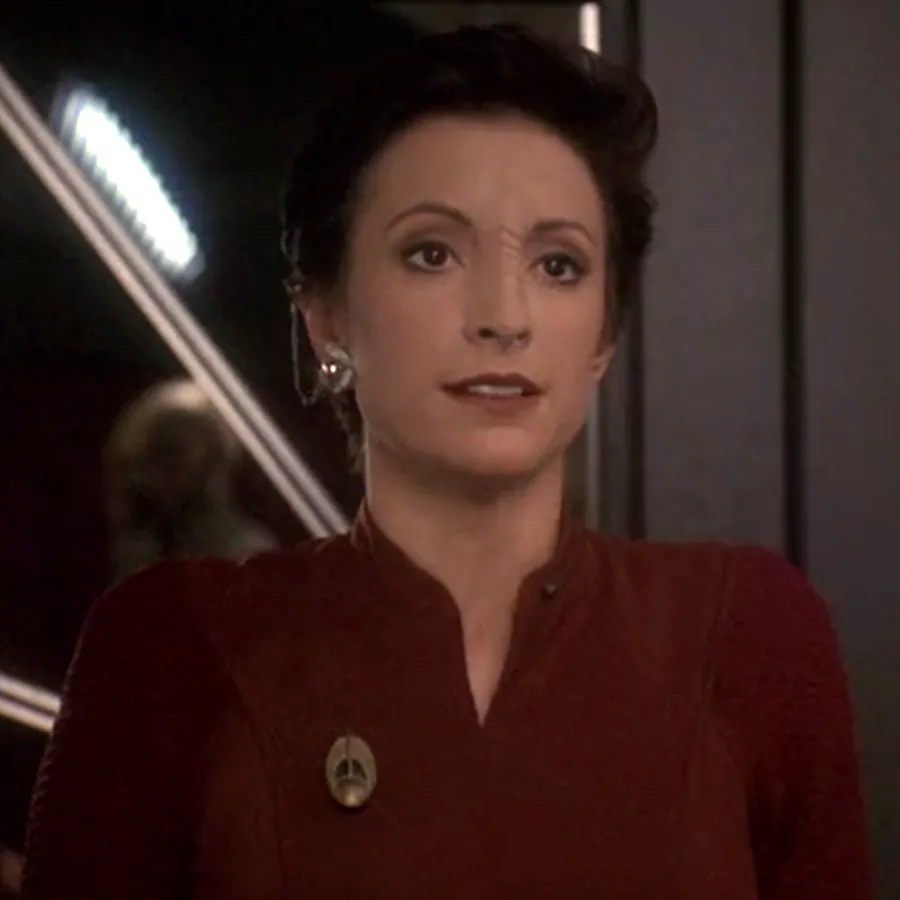
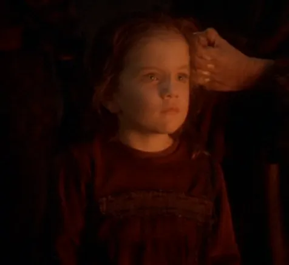
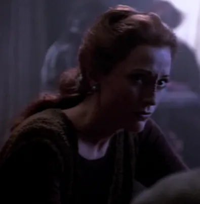
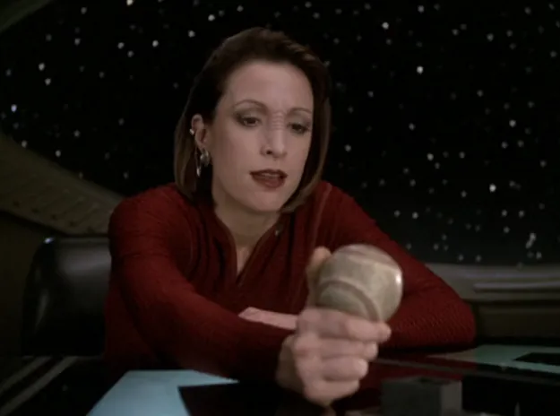
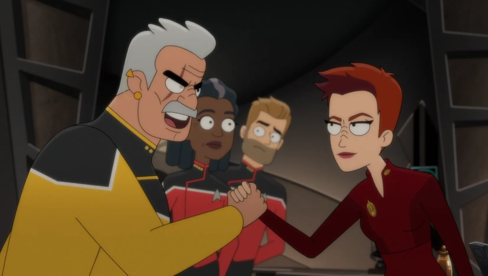

@c6reviews.
@c6reviews.| Kira Nerys | |
|---|---|
 |
|
| Played by: | Nana Visitor |
| Primary Series: |  Seasons 1-7 |
| Also appears in: |
LOW 3x06: Hear All, Trust Nothing |
| Also played by: |
Unknown/uncredited performer (as a young girl in DS9 6x17: Wrongs Darker
than Death or Night) |
Early Life
Kira born
Kira Nerys is born in Dahkur Province on Bajor to Kira Taban and Kira Meru.View on comprehensive timeline ❱

Kira's mother was taken away to Terok Nor
When Nerys was 3 years old, her mother was taken away by Cardassian forces to the space station, Terok Nor, in order to serve as a comfort woman to the Cardassian officers stationed there. Since Nerys was too young to understand this, her father told her that Meru had died.DS9 6x17: Wrongs Darker Than Death or Night
2347–2354
(8 years)
(8 years)
Service with the Bajoran Resistance
Kira becomes associated with the Bajoran Resistance
At age 12, Kira had associated herself with the Shakaar resistance cell. She ran errands, cleaned weapons, and performed other tasks for the cell.
Kira volunteers for her first real mission with the resistance cell
When the Shakaar resistance cell needed more infantry for a mission, Kira stepped up and volunteered. Many thought she was too young, but another member, Lupaza, stood up for her. Shakaar Edon himself eventually approved of Kira's inclusion on the mission. Kira proved herself on that mission, having fired her weapon at the Cardassians until the power cell was empty.
2357–2364
(8 years)
(8 years)

Kira is sent to Terok Nor to retrieve a list
Continuing her work for the Bajoran underground, Kira traveled to Terok Nor to retrieve a list of Bajoran collaborators from the station's chemist. She became Odo's prime suspect when the chemist was murdered.DS9 2x08: Necessary Evil
Kira age 25
Service on Deep Space Nine
Kira becomes the Bajoran liaison officer on Deep Space Nine
After the Cardassian withdrawal from Bajor, Kira was appointed to the position of Bajoran liaison officer to the Federation on Deep Space Nine. Her loyalty to Bajor left her initially opposed to the Federation's presence, despite knowing that it was necessary for her people's safety.DS9 1x01/02: Emissary

Kira meets her Mirror-Universe counterpart
Kira inadvertently travels to the Mirror Universe where she meets a version of herself who is in charge of the entire sector.DS9 2x23: Crossover
Kira reunites with Shakaar Edon
When Kai Winn is appointed First Minister, Kira is sent to retrieve essential farm equipment from Shakaar Edon, her former resistance cell leader. Over time, Kira finds herself falling for her former mentor.DS9 3x24: Shakaar

Kira meets Ziyal, assists Dukat in his rebellion
When cooperating with Dukat to investigate the remains of a crashed prisoner transport that carried both Cardassians and Bajorans, Kira meets Tora Ziyal, the child of Dukat and a Bajoran woman. Kira protects Ziyal and takes her under her wing, even during Dukat's somewhat-misguided rebellion against a pacifist Cardassian government. Kira brings Ziyal back to Deep Space Nine to protect her from the life Dukat has chosen to live.DS9 4x05: Indiscretion
DS9 4x14: Return to Grace
When someone starts murdering Kira's old resistance comrades, she goes off half-cocked on a mission for revenge
After the murder of her comrades including Furel and Lupaza, Kira seeks revenge on a Cardassian injured by one of her past attacks during the occupation.DS9 5x11: The Darkness and the Light
Kira goes back in time to learn the truth about her mother
Kira uses the Orb of Time to travel back to when she was 3 years old and her mother left, to find out if she died like her father had told her, or if she actually fell in love with Dukat on Terok Nor.DS9 6x17: Wrongs Darker Than Death or Night

Kira promoted to colonel; assumes command of Deep Space Nine
When Ben Sisko takes a leave of absence to gather his thoughts on Earth, Kira is put in charge of the space station. Kira remains in command after Sisko goes off to do battle with Dukat in the Bajoran fire caves.DS9 7x01: Image in the Sand
DS9 7x25/26: What You Leave Behind
Kira age 35

Kira assists Captain Carol Freeman in negotiations with the Karemma
Still in command of Deep Space Nine, Kira introduces Freeman to the Karemma when the USS Cerritos arrives.LOW 3x06: Hear All, Trust Nothing